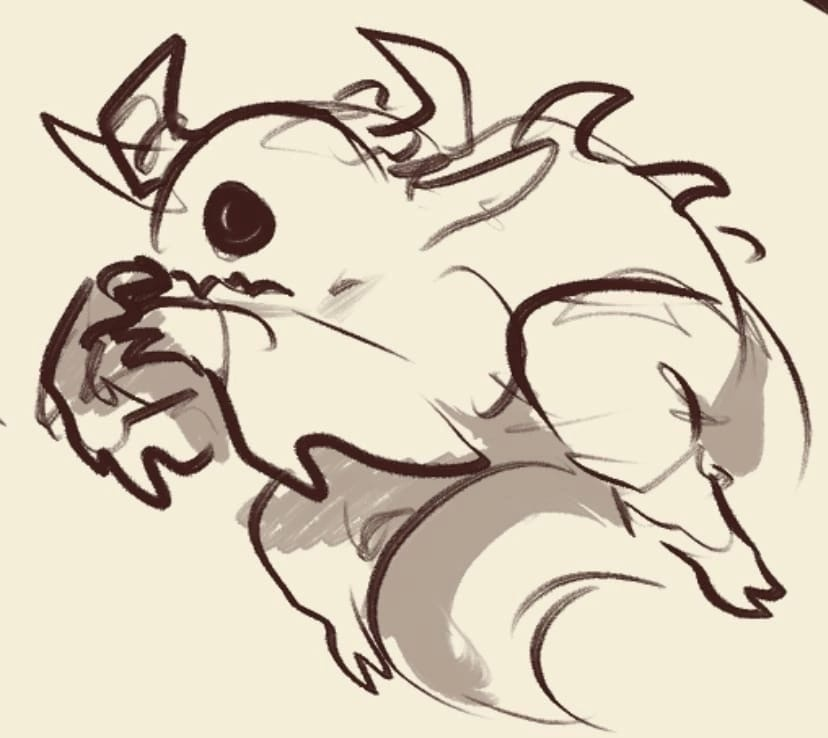

Это страничка для крутых !!!
И для любителей всратой европейской анимации
( •_•)⠀⠀⠀⠀(•_• ) ⠀⠀⠀ мои две последние мозговые клетки
( ง )ง ⠀୧( ୧ ) ⠀⠀⠀ дерутся в ожидании нового фильма
/︶\⠀⠀⠀⠀⠀ /︶\
ЭТО ССЫЛОЧКА НА НОРМАЛЬНЫЙ САЙТ
А БОЛЬШЕ НЕ БУДЕТ АХАХАХАХ и еще начало потеряно